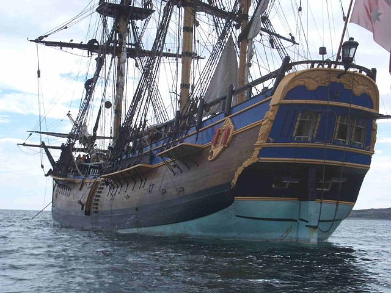

Kurzbiographie James Cook
Seine Reisen
Seine Schiffe
James Cook
Kurzbiographie
Lebensdaten
geboren am 27. Oktober 1728 in Marton bei Middlesbrough, Vereinigtes Königreich
gestorben am 14. Februar 1779 in der
Kealakekua Bay, Hawaiʻi
nach oben
Seine Reisen
Jahr
Reiseziel
1768-1771
Erste Südseereise Tahiti, Neuseeland, Kapstadt
1772-1775
Zweite Südseereise Osterinsel, Tahiti
-1779
Dritte Südseereise
nach oben
Seine Schiffe
HMS Endeavour

Absatz 2
nach oben